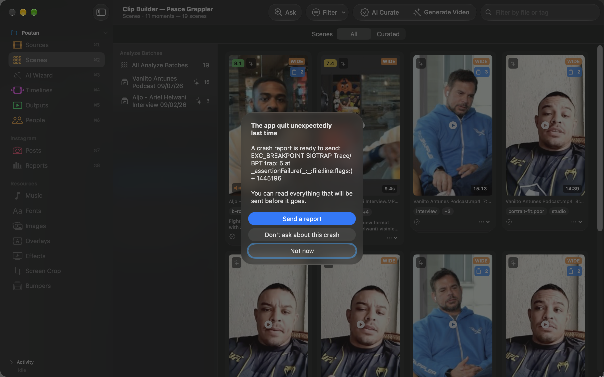
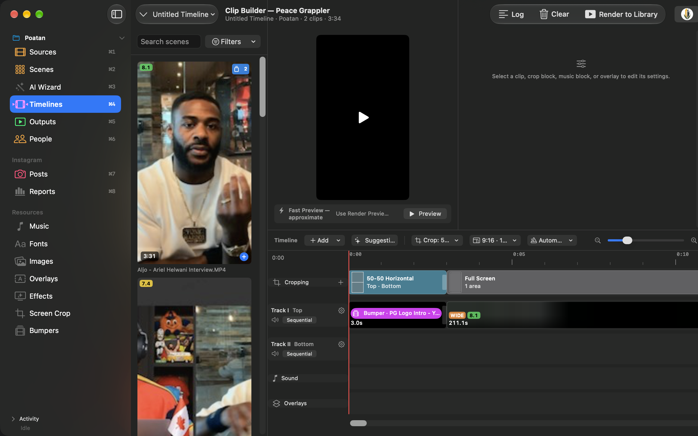
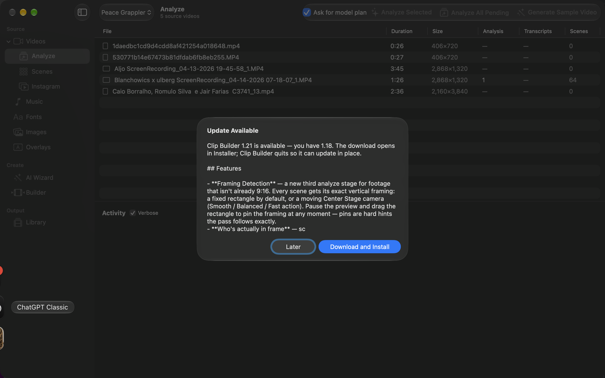

How to teach Clip Builder your taste, step by step — so every batch of reels gets closer to what you want
1. How Training Works
Clip Builder doesn't retrain the language model it talks to. Every rating you give is saved in your profile's database and turned into written instructions the AI reads before planning each new reel. The loop looks like this:
Generate reels with the AI Wizard.
Rate the results — thumbs up/down on whole reels, individual clips, and side-by-side variations.
Distill those ratings into a short rulebook of "Learned Lessons".
Generate again — the wizard applies the lessons plus your most recent ratings automatically.
The more you rate, the sharper the rulebook gets. Each training signal is described below, in the order you'll typically use them. All training is per profile, so each brand learns its own style.
2. Step 0 — Grade Your Scenes (before the first run)
Even before the wizard has produced anything, you can steer which footage it reaches for:
Open the Scenes tab.
Give strong scenes a 👍 (grade 5) and weak ones a 👎 (grade 1). The wizard sees each scene's average grade (e.g. grade:4.2/5) when choosing clips.
Mark your best material with the ♥ Favorite button.
Use Exclude on footage the wizard should never touch — excluded scenes are hidden from it entirely.

The Scenes tab — 👍/👎 grades, ♥ favorites, and excludes steer what the wizard picks from.
Tip: five minutes of grading after each Analyze run is the best "day zero" training you can do — it shapes clip selection before a single review exists.
3. Step 1 — Generate Variations to Compare
The fastest way to teach the wizard your taste is to let it try several approaches and tell it which one won:
Open the AI Wizard tab.
Set Variations per video to 2 or 3 (up to 5). Each variation uses a different creative approach — a different hook, pacing, or scene selection.
Click Generate Reels.
When the run finishes, the "Which variation is best?" sheet appears with the variations side by side. Watch them, then click Pick This One under the winner — or Skip — don't record a preference if none stands out.

The AI Wizard tab — output settings and per-run AI Instructions. The rulebook itself lives on the AI Lessons page.
Your pick is stored as an A/B preference: the wizard remembers why the winner's approach beat each loser's, and favors winning strategies in future runs.
Note: the wizard needs analyzed footage to work with. If the tab says "Analyze some videos first", run the Analyze tab on your Input folder before generating.
4. Step 2 — Review Finished Reels in the Library
This is the highest-leverage training signal. It's designed to take about ten seconds per reel:
Open the Library tab and watch a generated reel.
Click the 👍 Review button on its card. The review sheet opens.
Set the Overall verdict: 👍 or 👎. (Tap the active thumb again to clear it.)
Rate the four dimensions that apply: Hook, Pacing, Music, and Scene choice. You can skip any dimension you have no opinion on.
In the Clips strip, rate the individual picks the wizard made. When you thumbs-down a clip, a Why? menu appears — check every reason that applies: wrong scene, too long, too short, bad transition, text overlay off, wrong position.
Use the "Anything else?" field for anything the buttons can't say — your note is quoted verbatim to the AI in future runs.
Click Save Review. You can reopen and edit a review at any time.

The review sheet — overall and per-dimension thumbs, a free-text note, and per-clip ratings with reasons.
Tip: always pick a reason when you thumbs-down a clip. "Bad — too long, wrong scene" teaches the wizard something concrete; a bare 👎 teaches it much less. Scenes you flag as bad picks are avoided in future reels, and scenes you flag as good picks are favored.
Deleting a reel is also a signal — the wizard is told when a reviewed reel was deleted and treats it as a strong negative.
5. Step 3 — Distill Lessons into a Rulebook
After you've reviewed a handful of reels (three to five is a good start), compress that history into rules:
Open AI Lessons in the sidebar and expand the Lessons card.
Click Distill rules from reviews (the ✨ button). The AI reads all your reviews, clip ratings, A/B picks, and notes, and writes at most 10 short imperative rules — e.g. "Open with the highest-energy scene" or "Keep clips under 3 seconds".
Read the result. Each rule shows the evidence it was based on and which model wrote it. The ⋯ menu on a rule lets you Rewrite, Pin, Dismiss (hide it from the wizard, restorable from the Dismissed list under the card) or Delete it.
These rules are injected into every future wizard run as hard guidance. Distillation runs when you click the button, and once more before Publish in the sharing panel if reviews changed since the last distill — so re-distill whenever you've accumulated a new batch of reviews.
Important: distilling replaces all unpinned rules with a fresh set, including rules the Instagram performance pass wrote. Pin (📌) any rule that must survive before distilling again. The distiller looks for recurring patterns, so a one-off complaint usually won't become a rule — if something matters, say it in multiple reviews, or add it yourself as a pinned rule (next section).
6. Step 4 — Pin Rules and Add Your Own
Pinned lessons are permanent hard constraints — the wizard must follow them in every run, and distillation never touches them.
To protect a distilled rule, choose Pin from its ⋯ menu on the AI Lessons page.
To write your own rule, type it into the "Add a rule, saved as pinned" field under the Lessons card and click Add. Phrase rules as short commands: "Never use slow-motion openings", "Always end on the brand logo scene".
Pinned rule or AI Instructions? The wizard tab's AI Instructions field is the highest-priority input, but it's a per-run override (e.g. "today, always open with a knockout"). For anything that should apply every run, use a pinned lesson instead.
7. What the Wizard Reads Each Run
Every time you click Generate Reels, the wizard automatically loads your training signals — there's nothing to enable:
Signal
Where you create it
How the wizard uses it
Lessons
AI Lessons → Distill / Add rule
Every run, minus dismissed rules; a newer shared copy of the same rule replaces yours, and local plus shared learning share a 12,000-character budget; pinned rules are hard constraints
Style
Settings → Taste → House Style; Profile → Brand Kit and Default Output
House style on every plan and in the reel critic; hook and layout only while Learned editing defaults is on; caption languages in captions
Taste
Settings → Taste, or Edit on the AI Lessons page
The rubric or category your run's taste preset picks, with example frames attached; the rubric in the critic; highlight tags in analysis
Vocabulary
Settings → Profile → Tag Schema and Brand Kit
Tags during analysis; pinned hashtags seed captions when they use local hashtags; listed to the wizard as learned vocabulary once a Google Drive home is set
Names and descriptors in every plan; people in the reel become hashtag candidates when captions use local hashtags
Research
Fight Research sheet
Your research for the selected footage when fight research is on; research shared by other Macs arrives in the shared block; sentiment and angle in captions
Reviews
Library → Review sheet
The 10 most recent reviews, including per-clip verdicts and reasons
A/B picks
"Which variation is best?" sheet
The 10 most recent picks — "chose X over Y" with rationale; winning strategies are built on
Notes
Review sheet → "Anything else?"
Your latest notes, quoted verbatim
Scene grades, favorites, excludes
Scenes tab
Grades and favorites steer clip selection; excluded scenes are never used
Because only the most recent reviews and picks are loaded in full, recency beats volume: if your taste changes, your newest ratings win over older ones. Older history isn't lost — it's what the Distill step compacts into lessons.
8. What the AI Knows — the AI Lessons Page
AI Lessons in the sidebar is the one place that shows everything above. Each card says what the section is for, which features read it (hover a chip for the exact condition), and where to change it — either an Edit… action in the row's ⋯ menu or a link to the right Settings tab.
The AI Lessons page — one card per kind of learning, the trained models, and the sharing panel.
What the AI reads… opens three views: the learning available to the wizard from this profile (with anything dropped by a merge and why), the exact prompt the wizard sent on its last plan for this profile with the images it attached, and the redacted document that leaves your Mac when you publish.
The checklist at the top tracks which sources feed the wizard yet, with a button to fix each gap.
Trained models are small on-device models trained from your own reels. Evaluate one, then switch it on; it runs only while Prefer on-device processing is on in Settings → AI.
Sharing with other Macs publishes your learning to a Google Drive home and pulls what other Macs published. The share switches only control what leaves this Mac; they never change what this Mac uses, though each feature still applies its own conditions above.
9. A Good Training Routine
After each Analyze run, spend a few minutes grading and excluding scenes.
Generate with 2–3 variations and always answer the comparison sheet.
Review every reel you actually watch — ten seconds each, with reasons on every clip 👎.
After every 3–5 reviews, click Distill rules from reviews on the AI Lessons page, then read, edit, and pin the results.
Keep the rulebook small and current — delete lessons that no longer apply. Ten sharp rules beat a long contradictory list.
Within a few cycles, the wizard's first drafts should start looking like reels you'd have cut yourself.